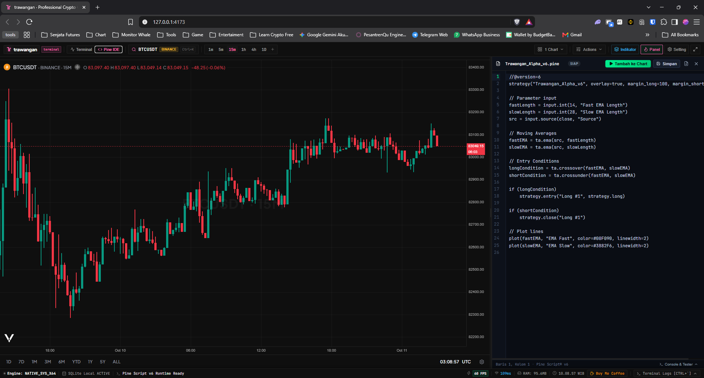
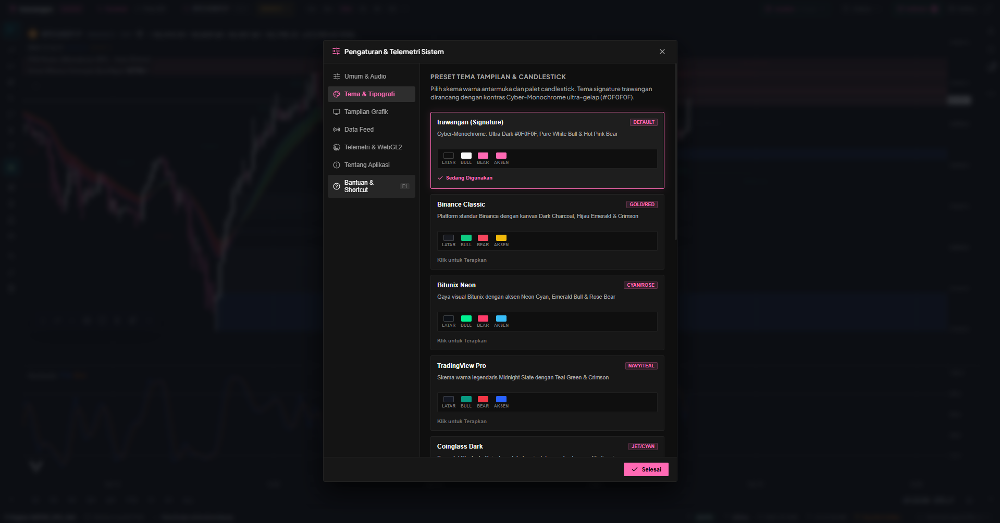

Melihat Menembus Kabut
Manipulasi Pasar.
Terminal analisis teknikal desktop native ultra-ringan berbasis Tauri v2 & Rust Core. Visualisasi grafik WebGL2 120 FPS, eksekusi Pine Script v6 lokal, Draw by Holding inking, setup Side-by-Side Ultra HD, dan kedaulatan data offline 100% tanpa biaya langganan.

Filosofi di Balik trawangan
Diambil dari etimologi bahasa Jawa kuno penerawangan (ꦠꦿꦮꦔꦤ꧀), yang merepresentasikan kemampuan mata batin untuk melihat menembus kabut manipulasi, ilusi kasat mata, dan kekacauan duniawi.
Di tengah ekosistem pasar kripto modern yang bising, di mana pergerakan harga sering kali dikaburkan oleh manipulasi likuidasi tersembunyi dan platform komersial mengunci alat analisis dasar di balik paywall langganan mahal, trawangan diciptakan. Kami mendedikasikan aplikasi ini murni untuk Pure Charting Scope: perangkat analisis grafis objektif, jernih, dan tajam yang mengembalikan kedaulatan data sepenuhnya ke tangan trader tanpa distraksi emosional eksekusi order.
Mengapa Berlangganan jika Analisis Bisa Bebas?
Bandingkan kebebasan analisis teknikal di trawangan dengan platform charting komersial berbayar.
| Fitur & Kapabilitas |
|
Platform Komersial Gratis (TradingView dkk) |
|---|---|---|
| Indikator per Kanvas Kombinasi indikator teknikal simultan | Tanpa Batas (Unlimited) | Dibatasi ketat (Maks. 2 - 3 indikator) |
| Gesture Inking Engine Menggambar bentuk hanya dengan menahan tombol | Draw by Holding (Shift+D / ~) | Tidak Ada (Klik manual berulang) |
| Multi-Chart Grid Layout 1, 2, 2H, dan 4 sel grafik tersinkronisasi | Bebas Penuh (1 - 4 Grid Sync) | Terkunci (Tier Pro $14.95 - $59.95/bln) |
| Ekspor Setup & Snapshot Resolusi tangkapan layar & panel tesis | Ultra HD hingga 6x + Side Panel | Resolusi standar, tanpa panel tesis |
| Dual-Entry & Trading Plan Ingestion Import setup trading dari teks/tabel AI & Blended Plan | Deterministik Sub-5ms (Ctrl+Shift+P / Ctrl+V) | Wajib input manual per-posisi |
| Kalkulasi R Dinamis & Proyeksi Zona R-multiple pada target TP1, TP2, dan Entry Zone | Otomatis Terkalkulasi (+X.XXR) | Manual / Nilai statis |
| Sistem Tema & Kustomisasi Dekopling tema shell vs grafik & preset | Dual-Theme + Studio "Save As" (9D) | Tema terbatas gelap/terang standar |
| Background Alert Engine Evaluasi alert harga multi-simbol di latar | Aktif di Latar + Audio Chime | Kuota sedikit (maks 5 alert gratis) |
| Eksekusi Pine Script v6 Menjalankan indikator & strategi kustom | Penuh (Web Worker Lokal PineTS) | Dibatasi kuota server & antrean cloud |
| Penyimpanan & Kedaulatan Data Alat gambar, riwayat setup, dan profil | 100% Offline Lokal (SQLite) | Cloud tracking, telemetri, & iklan |
| Konsumsi Memori RAM Beban sistem saat analisis berjam-jam | Ultra-Ringan (~30-50 MB) | Boros RAM (500 MB - 1.5 GB Electron) |
| Biaya Langganan Biaya penggunaan bulanan atau tahunan | Rp 0 / $0 Selamanya Open Source MIT License | $14.95 - $59.95 / bulan Wajib kartu kredit & tagihan rutin |
Direkayasa untuk Kecepatan dan Presisi Institusional
Kombinasi arsitektur desktop native, gesture drawing engine, parser deterministik sub-5ms, dan ekspor snapshot berstandar editorial finansial.
Draw by Holding Gesture Engine
v0.25Tahan Shift+D atau ~ lalu goreskan mouse bebas di grafik untuk melahirkan Trend Line, Ray, Box, Elips, Fibonacci, atau Panah secara instan. Coret zig-zag di atas gambar (Scribble Erase) untuk langsung menghapusnya tanpa perlu berpindah alat gambar manual.
Dual-Entry Blended Plan & Side-by-Side Thesis Panel
v0.38.1Salin trading plan dari teks bebas atau tabel Markdown lalu tekan Ctrl+V di atas grafik. Parser deterministik lokal (< 5ms) langsung melahirkan kotak posisi bertingkat dengan bobot dual-entry (Entry 1 & Entry 2), proyeksi Entry Zone, visualisasi kotak transparan 100%, serta ekspor tangkapan layar bersih dengan Dedicated Thesis Side Panel (~380px) tanpa menutupi candlestick.
Dual-Theme Studio & Save As
v0.32Pisahkan tema antarmuka aplikasi dan tema kanvas grafik secara independen. Simpan racikan palet warna 9-dimensi sebagai preset kustom, gunakan tema terang Red Folder News, serta ubah mode warna dalam 1-klik di header.
Background Alert Engine
v0.32Alert harga multi-koin tetap aktif dievaluasi di latar belakang meskipun koin tersebut sedang tidak dibuka di grafik aktif. Dilengkapi polling pasar dinamis tanpa idle dan nada alarm kristal sintetis Audio Chime.
Pintasan Produktivitas Cepat
v0.30Alt+O untuk smart-toggle object tree, Ctrl+D duplikasi gambar cerdas 5 tick, Alt+Z / F auto-fit viewport, Alt+I invert skala harga, serta Alt+K/Alt+L bulk lock & hide seluruh anotasi.
WebGL2 120 FPS Vela Engine
Rendering grafik lilin ultra-mulus hingga 120 FPS dengan akselerasi GPU penuh ditenagai LuxAlgo Vela, 76 varian alat teknikal lengkap, navigasi geser Hand-Pull (H), dan magnet snapping OHLC presisi.
Side-by-Side Pine Script v6 IDE
Editor CodeMirror 6 berdampingan dengan grafik. Eksekusi skrip PineTS v6 terisolasi pada Web Worker lokal tanpa memblokir antarmuka pengguna atau terhambat antrean server pihak ketiga.
Tauri v2 Native Desktop & SQLite
Dibangun dengan arsitektur native Rust dan WebView2 sistem. RAM hanya ~30-50 MB (tanpa Electron bloat). Seluruh konfigurasi, gambar, dan watchlist tersimpan 100% offline di SQLite lokal.
Indodax IDR & Jam Sesi Bursa Dunia
Dukungan data feed multi-exchange (Binance, Indodax IDR dengan nominal Rupiah asli, Bitunix, Hyperliquid, Coinbase), pencarian simbol sub-5ms, dan jam bursa sesi dunia (Tokyo, London, New York, WIB/UTC) di status bar.
Kendali Penuh di Ujung Jemari Anda
Tingkatkan kecepatan analisis tanpa perlu membuang waktu mengklik menu secara manual.
Tahan tombol lalu goreskan mouse untuk menggambar garis, ray, box, fib, atau elips seketika.
Buka dialog penerimaan rencana trading deterministik lokal sub-5ms.
Tempelkan teks setup trading AI langsung di atas grafik untuk melahirkan kotak posisi bertingkat.
Salin gambar grafik 2x-6x HD berbingkai Branded Frame ke clipboard dalam hitungan milidetik.
Buka atau tutup panel daftar gambar dan indikator tanpa memutus fokus grafik.
Gandakan objek terpilih dengan pergeseran adaptif cerdas (5 tick harga & 60s waktu).
Reset dan selaraskan skala harga serta waktu ke seluruh candlestick historis di layar.
Invert orientasi grafik vertikal untuk mengecek bias teknikal dari sudut pandang terbalik.
Kunci atau sembunyikan seluruh objek gambar di grafik aktif secara serentak.
Hapus seluruh gambar teknikal pada instrumen aktif dengan konfirmasi cepat.
Pencarian instrumen dan koin lintas bursa instan dengan auto-switch provider.
Ketik angka pada grafik untuk memunculkan popover penggantian timeframe kilat.
Dibangun untuk Kecepatan dan Presisi
Lihat langsung antarmuka desktop trawangan yang dirancang dengan estetika minimalis dan responsivitas instan.



Pertanyaan yang Sering Diajukan
Pelajari lebih dalam mengenai lisensi terbuka, kapabilitas teknis, privasi offline, dan cara kerja terminal trawangan.
Rp 1.480.000.000), Bitunix, Hyperliquid, dan Coinbase. Dilengkapi juga dengan jam bursa sesi pasar dunia (Tokyo, London, New York, WIB/Jakarta, UTC) di status bar untuk memantau waktu pembukaan likuiditas global.
Mulai Menerawang Pasar Sekarang
Dapatkan installer biner resmi bebas paywall untuk sistem operasi Anda.